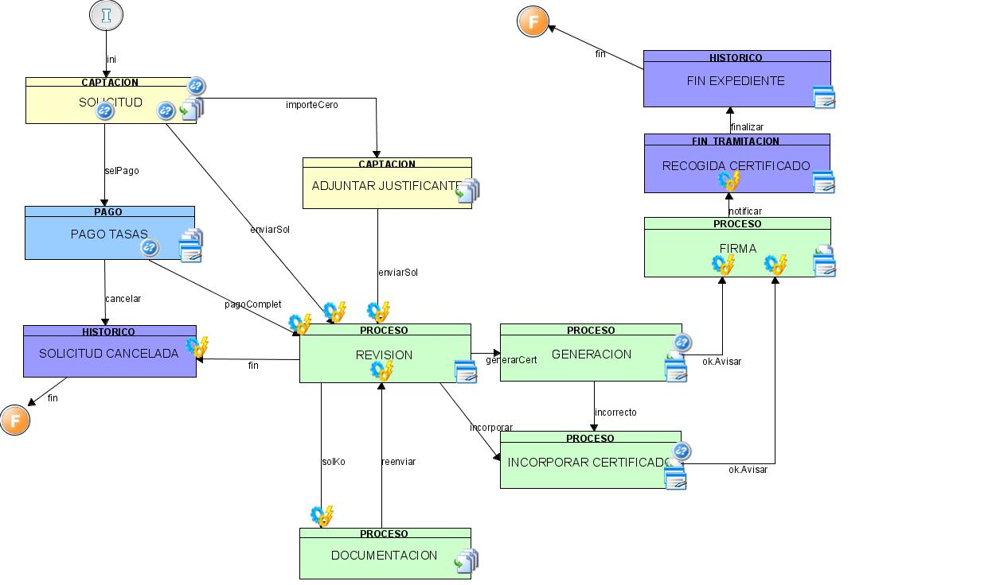
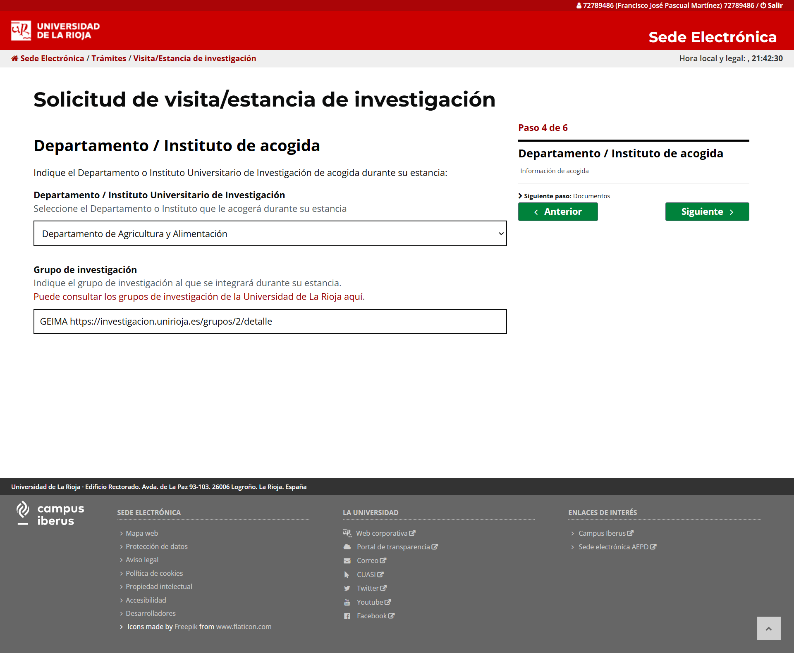

Civitas
Aplicación de solicitudes de Sede Electrónica que se integra con el nuevo gestor de expedientes y con el catálogo de procedimientos.
Implementa los formularios de los procedimientos que se ven en Sede Electrónica. Con la presentación, toda la información se envía al gestor de expedientes para que comience su tramitación.
Es el caso de los siguientes trámites:
- Firma convenios Empleabilidad
- Estancias/Visitas PDI
- Premios La Rioja por la Ciencia
- Inicio de convenios Vicerrectorado de Internacionalización
- Solicitud de títulos
- Comisiones de Servicios para los Campeonatos de España Universitarios
- Solicitudes de asesoramiento jurídico
La idea es recoger toda presentación de trámites por parte del interesado en sede, no sólo la solicitud inicial sino también otras fases del procedimiento como la subsanación o aportación de documentos.
Por motivos históricos, se eligió Trewa de la Junta Andalucía como motor de tramitación. El diseño de procedimientos se basa en un modelado por fases:

Además, no cuenta con una aplicación que funcione como Sede Electrónica para iniciar las solicitudes, por lo que desde el inicio tuvimos que desarrollar una aplicación de solicitudes que se integrara con Trewa.
La realidad es que para el modelo de la Universidad el diseño de procedimientos debe ser más flexible y que permita integrar arquitecturas modernas.
Esta herramienta trata por tanto de avanzar hacia un modelo de diseño e implantación de procedimientos que resulte más ágil y desacoplada del gestor de expedientes.
